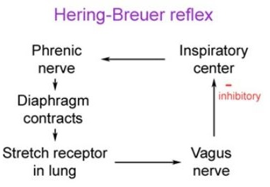

- Pulmonary Mechanoreceptors (1)
- Detect mechanical changes of breathing (volume and frequency).
- Influence the brain stem respiratory control centers via sensory fibers in vagus nerves.
- Pulmonary stretch receptors (PSR) – detect volume changes; present in the smooth muscle of the airways; slowly adapting; activated during inspiration to force expiration.
- Hering-Breuer inflation reflex:
- Triggered to prevent over-inflation of the lungs.
